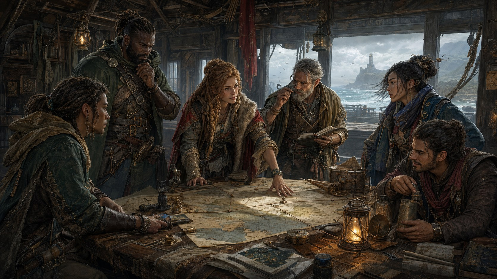

One seed. One connected campaign workflow.
Campaign Launchpad
Build the region, party, opening session, campaign arc, and player follow-through as one reproducible sequence. Start free, then add only the production data that fits the game you are preparing.
Build a campaign planCampaign brief
Set the table
Every destination receives the same seed, party size, and power tier. Scope and spotlight tune the session structure and product recommendations.
CL-00000000
Exploration full evening for 4 players
- Free routes
- 5
- Focused modules
- 3
- Players
- 4
Five-step prep loop
Move from premise to continuity
Contextual expansion
Add depth where this campaign needs it
The free workflow is complete on its own. These three standalone modules match the selected spotlight and stay separate so you can buy only the data you will use.
Commercial boundary: three separate $3 products, no subscription, no bundle link, and no required purchase.
Campaign continuity
Keep the setup portable
Are the paid modules required?
No. The complete five-step workflow is free. The modules add larger production-ready datasets for the parts of the selected play loop that need more depth.
Can I share the setup?
Yes. Copy the launchpad URL or save the Markdown plan. The same seed and settings reproduce the same linked tool routes.
Where does campaign data go?
Nowhere outside the active page unless you choose a tool link or export. There is no account, analytics script, hosted AI runtime, or persistent storage.